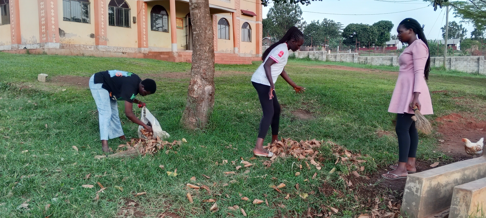

Teachers joined hands to sweep, gather leaves, and care for shared spaces around the school. Their practical example showed how small acts of teamwork help make the school environment more welcoming.
Taking care of common areas is a shared responsibility. By pitching in together, staff demonstrate consideration for the community and encourage a spirit of service that pupils can carry into everyday life.
Working together for a cleaner space
